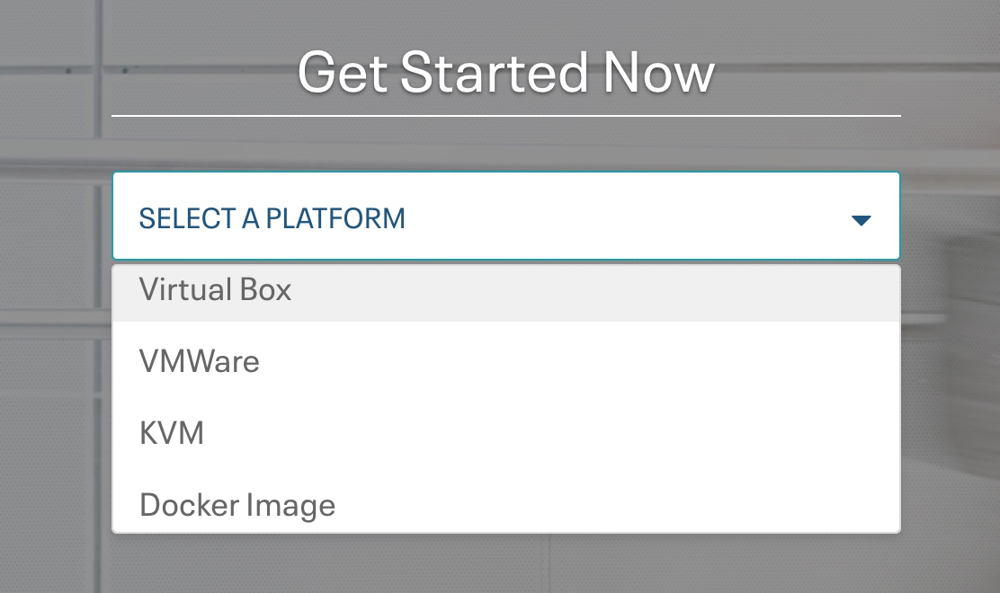
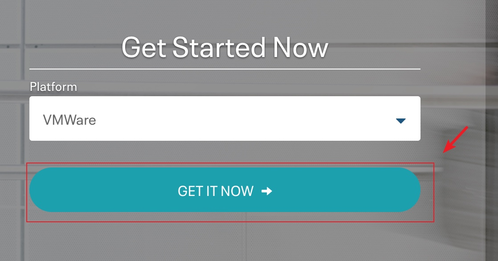
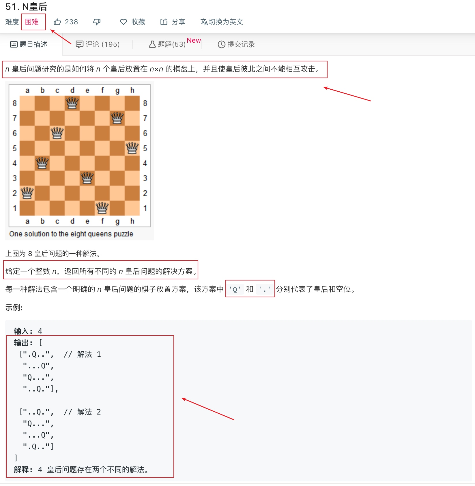

三分钟上手arch linux操作系统&openbox图形界面初始化
arch linux是高度可定制的极简版操作系统，加上号称最快的linux图形系统openbox，搭配起来是工作和生活得力的工具
获取arch linux
地址列表：https://www.archlinux.org/download/
可以使用163的镜像直接下载，参考：https://mirrors.163.com/archlinux/iso/2020.01.01/archlinux-2020.01.01-x86_64.iso
获取可用的计算机
可以使用真机（笔记本或者台式机），这里使用vmware fusion创建一个2c4g的虚拟机。
规划磁盘空间: 15.5G
| 空间大小 | 作用 | 类型 |
|---|---|---|
| 13GB | 系统盘 | ext4 |
| 2GB | 交换空间 | swap |
| 0.5GB | uefi引导文件 | fat32 |
同步时间
系统时间不对可能造成ssl连接失败导致后续安装出错
timedatectl set-ntp true
timedatectl status
三分钟搭建大数据sql开发平台
目前工作内容中包含比较多的sql需求，但是公司目前的sql开发平台hue系统最近越来越慢了，一般在开发过程中会验证一些小sql是否符合预期，某些大sql也可能会拆成数个/数十个子sql进行分步验证，如果每个小sql需要等待数分钟才能查看结果，无疑会导致sql开发效率变得低下
所以在本地搭建一个大数据sql开发平台就十分必要了
cloudera公司提供了方便的一键启动的虚拟机，参考：https://www.cloudera.com/downloads/quickstart_vms/5-13.html

平时一般使用vmware虚拟机，这里就用vmware举例了，可以看到cloudera官方还支持virtual box, kvm, docker image等虚拟机系统，可以自行选择
获取hue虚拟机

单击"GET IT NOW"，然后填一个问卷单就可以下载了，下载完成后可以检查下文件大小，约5.76GB是下载ok的
使用go解析二进制tcp数据包
tcp全名是传输控制协议，tcp协议在ip协议基础上增加了数据包完整性检查等保证传输完整性的机制，使其在现在的数据领域得到了广泛的应用
按照下面的步骤可以快速了解tcp数据包中包含的信息
tcp协议rfc文档解读
rfc参考：https://tools.ietf.org/html/rfc793
核心tcp数据包结构如下

可以看到tcp报文由十余个字段组成，最后一个data字段代表了本次tcp数据报文承载的数据，这个数据一般是应用层的数据，比如http报文数据就是在这个tcp包的data字段中
其中常用字段如下
| 字段 | 作用 |
|---|---|
| Source Port | 发包机器的端口号 |
| Destination Port | 收包机器的端口号 |
| Sequence Number | 包编号 |
| Acknowledgment Number | 确认包号 |
| urg/ack/psh/rst/syn/fin | 标志位,设置是/否的操作标志 |
| Window | 流量控制窗口 |
| Checksum | 包完整性校验 |
注意：客户端和服务端使用独立的包编号计数器器
checksum服务端和客户端会分别计算，客户端依靠这个值判断tcp包在传输过程中是否被异常改变/篡改
twitter公司redis&memcached中间件twemproxy源码分析（一）
twemproxy是redis和memcached连接池中间件
github项目地址：https://github.com/twitter/twemproxy
项目简介参考：https://github.com/twitter/twemproxy#features
文档参考：https://github.com/twitter/twemproxy/blob/master/notes/recommendation.md
核心流程

主流程就是启动了一个事件循环，所有的逻辑通过事件出发调用回调函数执行
"删除排序数组中的重复项" 普通解和性能优化解
饭后小憩
官方地址：https://leetcode-cn.com/problems/remove-duplicates-from-sorted-array/submissions/
问题描述
给定一个排序数组，你需要在原地删除重复出现的元素，使得每个元素只出现一次，返回移除后数组的新长度。
不要使用额外的数组空间，你必须在原地修改输入数组并在使用 O(1) 额外空间的条件下完成。
示例 1:
给定数组 nums = [1,1,2],
函数应该返回新的长度 2, 并且原数组 nums 的前两个元素被修改为 1, 2。
你不需要考虑数组中超出新长度后面的元素。
基本事实
比较容易想到的就是 相邻的元素进行比较，然后删除相同的相邻元素即可，重复这个过程直到数组末尾
另一种不容易想到的就是 把不重复的元素重新覆盖到元素数组中（不能使用额外数组，满足不使用额外的数组空间）
"最大子序和"dp解和其正确性分析
官方地址：https://leetcode-cn.com/problems/maximum-subarray/
问题描述
给定一个整数数组 nums ，找到一个具有最大和的连续子数组（子数组最少包含一个元素），返回其最大和。
示例:
输入: [-2,1,-3,4,-1,2,1,-5,4],
输出: 6
解释: 连续子数组 [4,-1,2,1] 的和最大，为 6。
基本事实
穷举算法思路：选1个组合的最大值，选2个任意组合的最大值，直到选n个组合的最大值，最后再求最大值，时间复杂度比较高 n*CnM
dp规律思路：一直累加(只要累加的结果是正数)，每次累加的结果比已经保存的结果大，就更新保存的结果（就是最大和），如果累加的结果为负，则从下一个元素重新开始累加，直到最后一个元素
初始值
- 最大和初始为：数组第一个元素
- 累加器初始值：数组第一个元素
"移掉K位数字"问题分析和算法实现-leetcode中等难度
官方地址：https://leetcode-cn.com/problems/remove-k-digits/
问题描述
给定一个以字符串表示的非负整数 num，移除这个数中的 k 位数字，使得剩下的数字最小。
注意:
num 的长度小于 10002 且 ≥ k。
num 不会包含任何前导零。
示例 1 :
输入: num = "1432219", k = 3
输出: "1219"
解释: 移除掉三个数字 4, 3, 和 2 形成一个新的最小的数字 1219。
基本事实
- 移除最大数无法保证移除后结果是最小的
- 使用单调递减队列保证从左往右剩余的数字最小
找"缺失的第一个正数"问题分析和算法实现-leetcode困难难度
leetcode官方地址：https://leetcode-cn.com/problems/first-missing-positive/

从提交结果可以看到官方准备了165个测试用例，这就是说这道题可能边界条件比较多
N皇后问题暴力解和回溯解问题分析和算法实现-leetcode困难难度
n皇后问题是经典的回溯解题的案例，回溯一般用在有多个解的算法中，回溯的核心是穷举，一般通过必要的减枝提高效率(减少重复计算等)，得到一个解后，把当前解进行保存，然后将当前解标记为未解决，继续尝试下一个可能满足条件的解，即回溯
穷举解有利于理解问题的本质，回溯解提高解题效率
题目参考：https://leetcode-cn.com/problems/n-queens/

可以看到n皇后是leetcode上一道难度为困难的题
基本事实
01背包问题穷举解和dp解c++实现
记得以前老师上来就dp直接搞蒙了，穷举可能更好理解些...
dp解主要是要搞懂递推方程式的推出过程，找到状态转移函数
题目
有 N 件物品和一个容量是 V 的背包。每件物品只能使用一次。
第 i 件物品的体积是 vi，价值是 wi。
求解将哪些物品装入背包，可使这些物品的总体积不超过背包容量，且总价值最大。
输出最大价值。
输出一个整数，表示最大价值。
dp解
#include <iostream>
const int MAXN = 1005;
int weight[MAXN] = {1, 2, 3, 4, 5}; // 重量
int value[MAXN] = {10, 20, 30, 40, 50}; // 价值
int f[MAXN][MAXN]; // f[i][j], j重量下前i个物品的最大价值
using namespace std;
int main()
{
int itemTot = 5; // 5个物品
int weightLimit = 10; // 最大装10重量
for (int i = 1; i <= itemTot; i ++) {
for (int j = 1; j <= weightLimit; j ++) {
// 当前重量装不进，价值等于前i - 1个物品
if (j < weight[i]) {
f[i][j] = f[i - 1][j];
} else {
// 能装，需判断
f[i][j] = max(f[i - 1][j], f[i - 1][j - weight[i]] + value[i]);
}
}
}
cout << f[itemTot][weightLimit] << endl;
return 0;
}
Copyright © 2015 Theme used GitHub CSS. 访问人/ 次